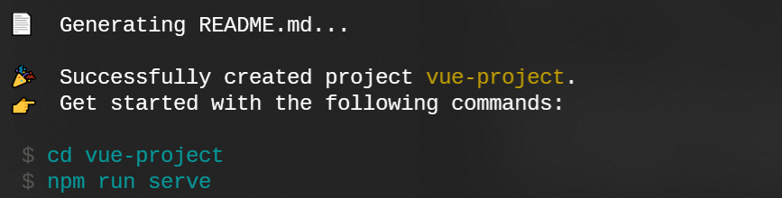

Vue 项目创建
Vue 项目的创建方式，与习惯使用的编辑器有一定的关系。我一般使用 WebStorm 进行前端开发，因此常用它来创建 Vue 项目；而使用 VS Code 的一般会用终端命令来创建。下面对两种方式都介绍一下。
终端命令
使用 Vue CLI 创建 vue 项目：
vue create vue-project # [vue-project] 为项目名称
选择项目模式，本教程将首先介绍 Vue2 的使用，因此在这里选择第一项。这里的 router 表示路由管理，vuex 表示前端状态存储管理，后续的开发会使用到，因此选择该项。
等待片刻后，初始化项目成功。

输入图中终端提示的命令，进入目录：
cd vue-project
本地运行项目：
npm run serve
如需打包部署到服务器上，则输入：
关于 build 命令在部署时需要使用，后面文章可能会讲到
npm run build
WebStorm创建
打开 WebStorm，点击 File -> New Project，选择 Vue.js，设置路径和 Node 解释器、Vue CLI（一般会自动识别）后，点击 Create。在这里，我一般会勾选掉 Use default project setup，以便在后续选择配置。
和终端方式类似，创建后会提示选择：
选择第一项，回车。等待片刻后，创建成功，WebStorm 界面如下：

点击右上角的“开始”按钮，就可运行项目。
我们可以配置同样的方式来打包项目以便部署。点击右上角“开始”按钮旁的下拉框，选择 Edit Configurations，如下图配置：


点击OK后，可以在右上角看到build的字样。在下拉框可以选择serve或build，后点击“开始”按钮即可运行或打包。
使用哪种方式创建项目都可以，当然也可以终端命令创建后用 WebStorm 打开，全看个人开发习惯。我个人更喜欢 Jetbrains 软件的界面，因此习惯使用 WebStorm 开发前端。